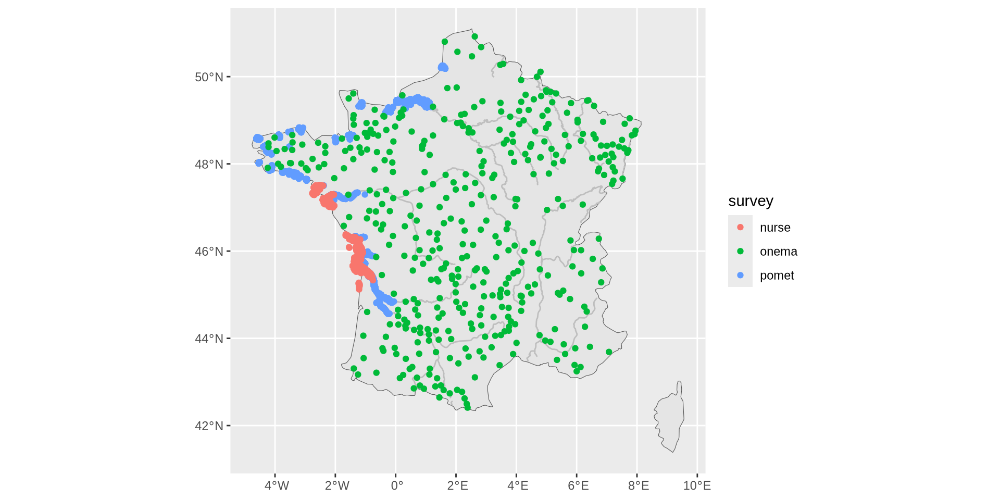
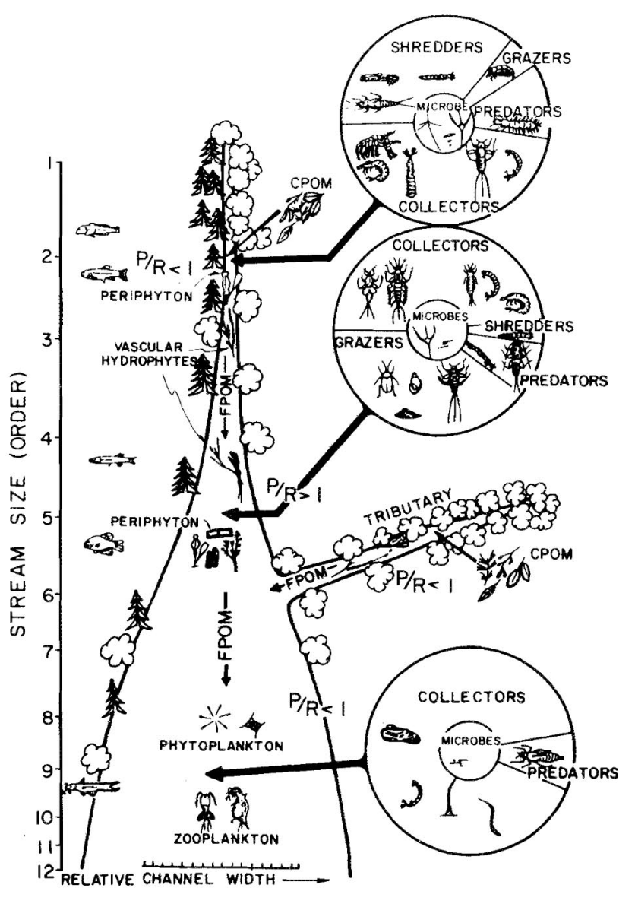
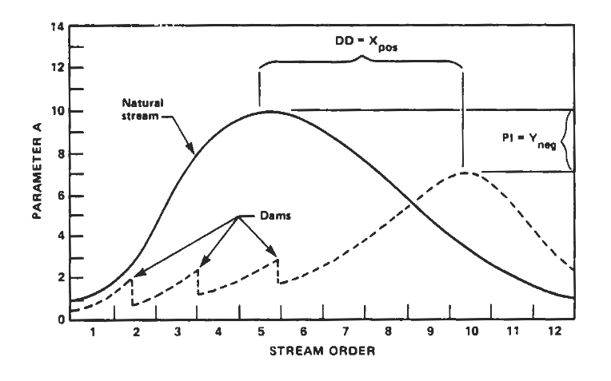
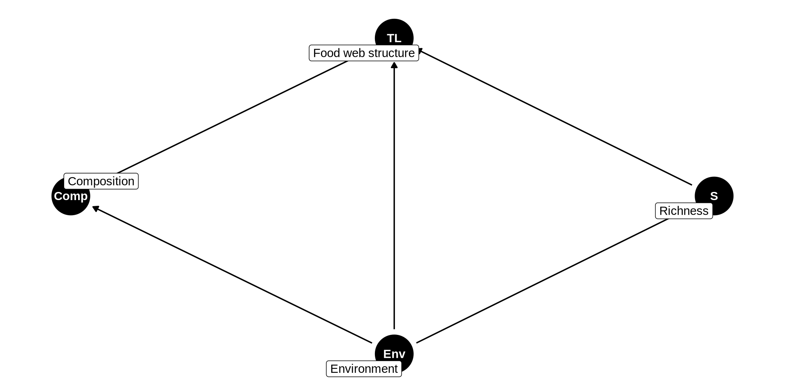

RIVERSEA Project
How disrupted spatial fluxes reshape food web structure along the river–sea continuum
Introduction
The River Continuum Concept

Vannote et al. (1980)- In natural stream, communities form a continuum
- Species turnover \(\rightarrow\) function replacement \(\rightarrow\) efficient use of energy input
- Downstream community captalize on upstream community outputs
- Provide a baseline expectation
- Limitations:
- Focus on the main stream: ignore the stream network
- Dispersal ability of organisms are disregarded
The Serial Discontinuity Concept
- Ward and Stanford (1983) assess the impact of discontinuities (e.g. dams) on downstream biotic and abiotic conditions
- Discontinuity impact with its position along the river continuum
- Cumulative effects of impoundment?
- Limitation: we rarely have access to natural stream at the scale of the bassin

Ward and Stanford (1983)The impacts of dams on riverine ecosystems
 He et al. (2024)
He et al. (2024)
- Decrease and richness abundance of migratory species (Chan et al. 2025)
- Lotic to lentic environment (He et al. 2024)
- Retention of sediments and nutrients
- Nutrient availability drive community richness (Ho et al. 2023)
- Increasing connectivity promote trophic length through prey availability (LeCraw et al. 2014)
How these impacts spread throughout the river-sea continuum
A meta-ecosystem perspective
How multiple stressors interact
- Stressors can interact with one another such that they can multiply or cancel their individual impacts (Jackson et al. 2021)
- The interaction can be synergistic or antagonistic (Orr et al. 2024)
- Temperature \(\times\) nutrients
- Expected in theory to be antagonistic (Binzer et al. 2012)
- But not supported by empirical data (Bonnaffé et al. 2024)
- Dam \(\times\) nutrients
- Decrease in connectivity which favor accumulation and so eutrophication (Maavara et al. 2020)
- Dam \(\times\) dam
- Dam have cumulative impact on migratory species (Dean et al. 2023)
In brief
- Dams have been reported to have an impact on riverine ecosystem
- But studies are mostly local and focused on species richness
- Furthermore the interaction of dams with other stressors has not been clearly assessed
- Lastly, dam impact could spread to the sea but this propagation has not been investigated
- Separation between freshwater and marine ecology
- Different survey and dataset
- Different interests, terminology, etc.
- We aim to link these fields, to answer the following question…
How dams reshape food web along the river-sea continuum by disrupting spatial fluxes?
What we have
- River and coast/estuary data (respectively provided by Alain and Anik)
- Long time series (e.g. Nurse survey started in 1980)
- Not always continuous (gaps)
- Different protocoles
- Species abundances
- Individual fish size (sometimes missing)
What we plan to add
For each local community:
- Distance to the sea/source
- Dams location
- Salinity
- Temperature
- Nutrient concentration
- … (any suggestion?)
Caution
Data should be available at each site (or can be infered) along the river-sea continuum.
Measuring the impact of dams
- Distance to the closest dam
- Height/reservoir volume of the closest dam
- Accumulated heights of upstream/downstream dams (Dean et al. 2023)
- At what scale dam impacts operate?
- Use the literature, but difficult because of varied impacts on species
- Make the statistical model infer the scale
- \(\text{Dam}_\text{down}(L) = \sum_{i \in \text{dam}} h_i e^{-\frac{d_i}{L}}\)
- \(L\) define the scale at which dam operates
- Try different values and compare WAIC (that is, model performance)
Food web reconstruction
How we reconstruct food webs
The base
How we reconstruct food webs
Diet and piscivory
- Extract fish diet with fishbase
- Diet changes with ontogeny (juvenile vs adults)
- Piscivorous interaction infered with predation window (e.g. 5-45% body size)
- Build a global metaweb with all possible interactions
- Infer local food web by subsampling
- Quantify structure with connectance and trophic length (a metric weighted by biomass?)
Note
Methods of Bonnaffé et al. (2021).
Statistical analysis
What we want
How dams reshape food web along the river-sea continuum by disrupting spatial fluxes?
- Quantify the impact of dams on food web structure
- In space and time
- Along the river-sea continuum
- Quantify interaction of dam with other stressors
- Bonus (liste au Père Noël):
- Use spatial correlation to assess flux between ecosystem (meta-ecosystem view)
- Predict the impact of dam removal (may be possible with bayesian model)
- Sélune project: tracking the impact of dam removal in Britany
The statistical model
Causal graph (DAG)

The statistical model
Equation
\[ \begin{align} \text{TL}_i &= \text{Normal}(\mu_i, \sigma_i) \\ \text{logit} (\mu_i) &= \beta_0 + \beta_1 D_i + \beta_2 \text{Dam} + ... ~ \text{[fixed effects]} \\ &+ \text{interactions} \\ &+ \text{random effects} \end{align} \]
- Account for survey random effects
- Account for spatial and temporal auto-correlation
- Use a spatiotemporal model (
R-INLA) - Possible limitations
- Can we distengle survey bias from environment effect?
- Until where the concept of continuum holds?
- Do we have high variability in dams density between hydrographic bassin?
Roadmap
- Build food webs in the coast/estuary
- Update food webs in rivers
- Collect and infer if necessary environmental data
- First perform “coarse-grained” statistical analysis
- At the bassin scale: Number of dam vs. Trends [TL vs Distance to the source]
- PCA to assess the main environmental drivers of food web structure
- Next, refine statistical analysis (
R-INLA)…
Thank you! Questions ?
References
Binzer, Amrei, Christian Guill, Ulrich Brose, and Björn C. Rall. 2012. “The Dynamics of Food Chains Under Climate Change and Nutrient Enrichment.” Philosophical Transactions of the Royal Society B: Biological Sciences 367 (1605): 2935–44. https://doi.org/10.1098/rstb.2012.0230.
Bonnaffé, Willem, Alain Danet, Camille Leclerc, Victor Frossard, Eric Edeline, and Arnaud Sentis. 2024. “The Interaction Between Warming and Enrichment Accelerates Food-Web Simplification in Freshwater Systems.” Ecology Letters 27 (8): e14480. https://doi.org/10.1111/ele.14480.
Bonnaffé, Willem, Alain Danet, Stéphane Legendre, and Eric Edeline. 2021. “Comparison of Size-Structured and Species-Level Trophic Networks Reveals Antagonistic Effects of Temperature on Vertical Trophic Diversity at the Population and Species Level.” Oikos 130 (8): 1297–309. https://doi.org/10.1111/oik.08173.
Chan, Jeffery C. F., Billy Y. K. Lam, David Dudgeon, and Jia Huan Liew. 2025. “Global Consequences of Dam-Induced River Fragmentation on Diadromous Migrants: A Systematic Review and Meta-Analysis.” Biological Reviews 100 (5): 2020–37. https://doi.org/10.1111/brv.70032.
Dean, E. M., Dana M. Infante, Hao Yu, Arthur Cooper, Lizhu Wang, and Jared Ross. 2023. “Cumulative Effects of Dams on Migratory Fishes Across the Conterminous United States: Regional Patterns in Fish Responses to River Network Fragmentation.” River Research and Applications 39 (9): 1736–48. https://doi.org/10.1002/rra.4173.
He, Fengzhi, Christiane Zarfl, Klement Tockner, et al. 2024. “Hydropower Impacts on Riverine Biodiversity.” Nature Reviews Earth & Environment 5 (11): 755–72. https://doi.org/10.1038/s43017-024-00596-0.
Ho, Hsi-Cheng, Florian Altermatt, and Luca Carraro. 2023. “Coupled Biological and Hydrological Processes Shape Spatial Food-Web Structures in Riverine Metacommunities.” Frontiers in Ecology and Evolution 11 (June). https://doi.org/10.3389/fevo.2023.1147834.
Jackson, Michelle C., Samraat Pawar, and Guy Woodward. 2021. “The Temporal Dynamics of Multiple Stressor Effects: From Individuals to Ecosystems.” Trends in Ecology & Evolution 36 (5): 402–10. https://doi.org/10.1016/j.tree.2021.01.005.
LeCraw, Robin M., Pavel Kratina, and Diane S. Srivastava. 2014. “Food Web Complexity and Stability Across Habitat Connectivity Gradients.” Oecologia 176 (4): 903–15. https://doi.org/10.1007/s00442-014-3083-7.
Maavara, Taylor, Qiuwen Chen, Kimberly Van Meter, et al. 2020. “River Dam Impacts on Biogeochemical Cycling.” Nature Reviews Earth & Environment 1 (2): 103–16. https://doi.org/10.1038/s43017-019-0019-0.
McCann, Kevin S., Kevin Cazelles, Andrew S. MacDougall, et al. 2021. “Landscape Modification and Nutrient-Driven Instability at a Distance.” Ecology Letters 24 (3): 398–414. https://doi.org/10.1111/ele.13644.
Orr, James A., Samuel J. Macaulay, Adriana Mordente, et al. 2024. “Studying Interactions Among Anthropogenic Stressors in Freshwater Ecosystems: A Systematic Review of 2396 Multiple-Stressor Experiments.” Ecology Letters 27 (6): e14463. https://doi.org/10.1111/ele.14463.
Vannote, Robin L., G. Wayne Minshall, Kenneth W. Cummins, James R. Sedell, and Colbert E. Cushing. 1980. “The River Continuum Concept.” Canadian Journal of Fisheries and Aquatic Sciences 37 (1): 130–37. https://doi.org/10.1139/f80-017.
Ward, J., and Jack Stanford. 1983. “The Serial Discontinuity Concept of Lotic Ecosystems.” Dynamics of Lotic Ecosystems 10 (January).